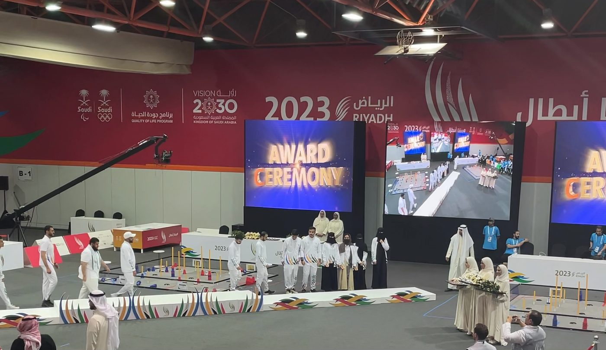

Oct–Dec 2023~2 months · team of 4
FTC Competition Robotروبوت مسابقة FTC3rd / 16
FIRST Tech Challenge · Saudi Games 2023, RiyadhFIRST Tech Challenge · دورة الألعاب السعودية 2023، الرياض
Represented Majmaah University and placed 3rd out of 16 university teams from across the Kingdom.مثّلنا جامعة المجمعة وحققنا المركز الثالث من بين 16 فريقًا جامعيًا من مختلف مناطق المملكة.
- Team programmer: wrote the robot's control code end to endمبرمجة الفريق: كتبت برنامج التحكم بالروبوت بالكامل
- Helped build the robot from scratch, then two months of testing and drillsشاركت في بناء الروبوت من الصفر، ثم شهرين من الاختبار والتدريب
RoboticsProgrammingTeamwork
